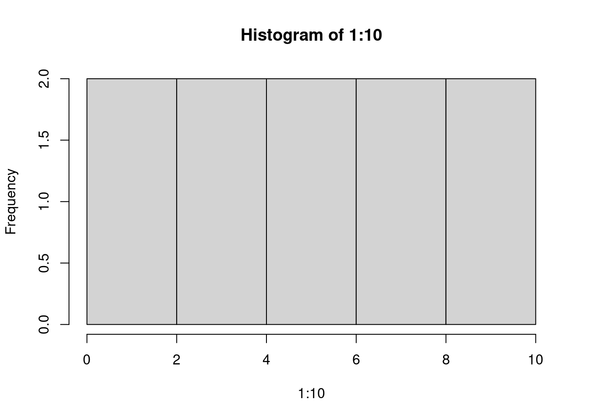

Introduction
kmikulik
15 12 2021
Last updated: 2021-12-20
Checks: 2 0
Knit directory: report/
This reproducible R Markdown analysis was created with workflowr (version 1.6.2). The Checks tab describes the reproducibility checks that were applied when the results were created. The Past versions tab lists the development history.
Great! Since the R Markdown file has been committed to the Git repository, you know the exact version of the code that produced these results.
Great! You are using Git for version control. Tracking code development and connecting the code version to the results is critical for reproducibility.
The results in this page were generated with repository version f94eb8c. See the Past versions tab to see a history of the changes made to the R Markdown and HTML files.
Note that you need to be careful to ensure that all relevant files for the analysis have been committed to Git prior to generating the results (you can use wflow_publish or wflow_git_commit). workflowr only checks the R Markdown file, but you know if there are other scripts or data files that it depends on. Below is the status of the Git repository when the results were generated:
Ignored files:
Ignored: analysis/Independent_cell_type_identification_Farhadian_dataset_cache/
Ignored: analysis/TF_activity_analysis_of_myeloid2_cluster_cache/
Ignored: analysis/Triculture_dataset_analysis_and_integration_Farhadian_dataset_cache/
Unstaged changes:
Modified: analysis/HIV_CSF_dataset_analysis.Rmd
Modified: analysis/Methods.Rmd
Note that any generated files, e.g. HTML, png, CSS, etc., are not included in this status report because it is ok for generated content to have uncommitted changes.
These are the previous versions of the repository in which changes were made to the R Markdown (analysis/Introduction.Rmd) and HTML (docs/Introduction.html) files. If you’ve configured a remote Git repository (see ?wflow_git_remote), click on the hyperlinks in the table below to view the files as they were in that past version.
| File | Version | Author | Date | Message |
|---|---|---|---|---|
| html | 436b5c2 | Katharina782 | 2021-12-20 | Build site. |
| Rmd | f7243f8 | Katharina782 | 2021-12-20 | wflow_publish(all = TRUE, republish = TRUE, delete_cache = TRUE) |
| html | f7243f8 | Katharina782 | 2021-12-20 | wflow_publish(all = TRUE, republish = TRUE, delete_cache = TRUE) |
| html | 40d3fef | Katharina782 | 2021-12-18 | Build site. |
| html | 6744d4e | Katharina782 | 2021-12-17 | Build site. |
| Rmd | 6647476 | Katharina782 | 2021-12-17 | wflow_publish(files = rmd) |
| html | 5fa8593 | Katharina782 | 2021-12-16 | Build site. |
| Rmd | 0662837 | Katharina782 | 2021-12-16 | wflow_publish(“analysis/Introduction.Rmd”) |
| html | 651971c | Katharina782 | 2021-12-16 | Build site. |
| html | 9d496d2 | Katharina782 | 2021-12-16 | Build site. |
| Rmd | 6ddf609 | Katharina782 | 2021-12-16 | wflow_publish(“analysis/Introduction.Rmd”) |
| Rmd | e87fa96 | Katharina782 | 2021-12-16 | new files |
The World Health Organization (WHO) reported the number of people living with HIV in 2020 to be approximately 37.7 million. The use of antiretroviral therapy(ART) has increased the life expectancy in the past years. One of the most prevalent comborbidities that persist even during ART is HIV-associated neurocognitive disorder (HAND).
Human Immunodeficiency Virus (HIV)
HIV is a lentivirus consisting of two single stranded RNA molecules, encoding fifteen different viral proteins which are essential for viral replication (Olivia Osborne 2017). At the same time these proteins are potential targets for ART drugs. The RNA molecules are enclosed in a capsid of p24 protein and the capsid is surrounded by a lipid membrane (Olivia Osborne 2017). The viral envelope glycoprotein (Env) is responsible for recognizing the host cells and the subsequent fusion of the vius with the host cell plasma membrane (Nerea Huarte 2016). The glycoprotein gp120 binds to the cluster of differentiation 4 (CD4) receptors on CD4+ T cells, macrophages and microglia cells (Olivia Osborne 2017). A structure of the virus particle is shown in figure 1 from (Olivia Osborne 2017).
ART drugs circulate the blood and suppress HIV replication of peripheral immune cells. However, long-lived cells (eg. CD4+ T cells, macrophages, microglia) can become persistent HIV reservoirs. This is called latent infection. Latent infection means that cells host replication competent HIV in their genome, without virus production (Alessandra Bandera 2019). These reservoirs would cause the increase in HIV replication as soon as the treatment was interrupted, which is why ART is continued as a lifelong treatment (Clementine Wallet 2019).

Click for Answer

<p>
<button type="button" class="btn btn-default btn-xs btn-workflowr btn-workflowr-fig"
data-toggle="collapse" data-target="#fig-unnamed-chunk-1-1">
Past versions of unnamed-chunk-1-1.png
</button>
</p>
<div id="fig-unnamed-chunk-1-1" class="collapse">
<div class="table-responsive">
<table class="table table-condensed table-hover">
<thead>
<tr>
<th>Version</th>
<th>Author</th>
<th>Date</th>
</tr>
</thead>
<tbody>
<tr>
<td><a href="https://github.com/Katharina782/report/blob/436b5c2790a0ce492f776915a9e543bf3a84511d/docs/figure/Introduction.Rmd/unnamed-chunk-1-1.png" target="_blank">436b5c2</a></td>
<td>Katharina782</td>
<td>2021-12-20</td>
</tr>
</tbody>
</table>
</div>
</div>
Click to Expand
Microglia & Macrophages
Microglia arise early during development form the yolk sac and they enter the CNS even before the blood-brain barrier is formed. They form the tissue-resident immune cells of the brain and maintain their ability to proliferate (Réu P 2017). Conversely, bone marrow derived monocytes differentiate into macrophages, which are peripheral blood-circulating immune cells which do not proliferate anymore (DePaula-Silva AB 2019).
Macrophages can adopt two distinct states, pro-inflammatory (M1) or anti-inflammatory (M2). Similarly, homeostatic microglia can become pro-inflammtory or anti-inflammatory in response to neuronal injury (DePaula-Silva AB 2019). During neuroinflammation macrophages also enter the brain, contribute to the inflammatory response and might acquire microglia markers and microglia function (DePaula-Silva AB 2019; Francesca Grassivaro and Martino 2018). Whether macrophages keep this microglia-like signature after they leave the brain is not understood. If they do, there might be microglia-like macrophages in the CSF.
HIV infection in the central nervous system
The blood-brain barrier (BBB) is supposed to prevent pathogens from entering the CNS. Among the few cells which can pass this barrier are immune cells. Since HIV primarily infects immune cells it can circumvent the blood brain barrier and enter the central nervous system (CNS). Once HIV has entered the CNS it can infect microglia which live for several years and are therefore an ideal reservoir for the virus [(Olivia Osborne 2017; Saylor D 2016; Shelli F. Farhadian and Spudich 2018; Clementine Wallet 2019; Réu P 2017). One of the major problems that arises from the HIV invasion of the brain is that antiretroviral drugs are either not able to cross the BBB or they are removed from the brain by ATP-binding efflux pumps (Olivia Osborne 2017). Consequently, even thought drugs can enter the brain, their concentrations are largely reduced in the CSF compared to blood plasma, for example efavirenz in the plasma reaches concentrations of 9.2–16.6 μmol/ml, but in the CSF it only reaches 0.006–0.09 μmol/ml (Olivia Osborne 2017). In patients receiving ART the HIV virus is usually not detectable in blood (undetectable HIV RNA viral load means <50 copies/ml) or cerebrospinal fluid (CSF), but in the brain this is difficult to test and investigate and, therefore, largely unknown Olivia Osborne (2017).
Among patients receiving ART there is a high prevalence of HAND, caused by the persistent infection in the brain and the related immune response (Saylor?). It has even been suggested that ART might dysregulate tight junction proteins necessary for the function of BBB and, therefore, contributes to HAND Olivia Osborne (2017). According to a meta-analysis HAND has an overall prevalence of 43.9% in HIV-infected patients and is categorized into three stages (Wei J 2020):
- asymptomatic neurocognitive impairment (ANI) - 26.2% prevalence
- mild neurocognitive impairment (MND) - 8.5% prevalence
- HIV-associated dementia (HAD) - 2.1 % prevalence
Even thought the severity of HAND has declined due to ART treatment in the past years, there is a large need for deeper understanding of the molecular mechanisms behind the disease as well as better diagnostic tools. Since immune cells in the cerebrospinal fluid reflect the immune cells in the brain, CSF might be used as a diagnostic tool for neurocognitive disorder (Shelli F. Farhadian and Spudich 2018). Single cell RNA sequencing (sc-RNAseq) on CSF and blood from HIV-infected patients and healthy controls identified a microglia-like subtype of myeloid cells in CSF which were not present in blood samples from the same patient (Shelli F. Farhadian and Spudich 2018). HAND strongly correlates with microglia activation, therefore, understanding the role of microglia in HAND might provide interesting insights. expression signature of these cells resembles that of disease-associated microglia cells and, therefore was proposed to be a microglia-like cell type which might be used for diagnosis of HAND from CSF samples (Shelli F. Farhadian and Spudich 2018).
HIV infection in microglia
In the following analysis the aim was to provide further evidence for the microglia-like nature of these cells by performing additional analysis on the sc-RNAseq dataset and integrating it with additional datasets from, on the one hand a microglia cell line derived from an HIV patient (C20 cell) and, on the other hand, a triculture system of induced neurons, astrocytes and microglia, infected with HIV and treated with ART (Ryan SK 2020; Garcia-Mesa Y 2017).
The triculture dataset used in the following analysis originates from a human-induced pluripotent stem cell model, including induced neurons (iNs), inuced astrocytes (iAst) and induced microglia (iMg) co-cultured with or without HIV infection and antiretroviral therapy (ART) with efavirenz (EFZ) (Ryan SK 2020).
The infected iMg exhibited a higher production of proinflammatory cytokines than infected iMg treated with EFZ. Levels of IL-1b, IL-1a, IL-8 and TNF-α were increased in infected +/- EFZ, compared to uninfected conditions, while IL-10 and IL-6 did not change in any condition (Ryan SK 2020).
Since the infection states of the cells in this dataset are known, we might be able to extract a gene signature of infection, infection + ART compared to uninfected cells or uninfected cells treated with ART. This gene signature can then be compared to the microglia-like cells of the CSF samples. This way we might be able to identify infected cells vs uninfected cells in the CSF microglia-like cells. This is interesting, because even though the CSF samples stem from HIV-infected patients, there will be some cells which are infected with the virus, while others are not infected. Being able to differentiate between infected and uninfected cells would allow additional inferences about the effect of HIV infection on microglia.
The infected iMg exhibited a higher production of proinflammatory cytokines than infected iMg treated with EFZ. Levels of IL-1b, IL-1a, IL-8 and TNF-α were increased in infected +/- EFZ, compared to uninfected conditions, while IL-10 and IL-6 did not change in any condition (Ryan SK 2020).
Since the infection states of the cells in this dataset are known, we might be able to extract a gene signature of infected cells, infected cells treated with ART compared to uninfected cells or uninfected cells treated with ART. This gene signature could then be compared to the microglia-like cells of the CSF samples. This way we might be able to identify infected cells vs uninfected cells in the CSF microglia-like cells. This is interesting, because even though the CSF samples stem from HIV-infected patients, there will be some cells which are infected with the virus, while others are not infected. Being able to differentiate between infected and uninfected cells would allow additional inferences about the effect of HIV infection on microglia.